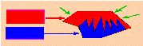
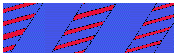
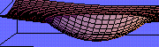

Why are the natural "designs" the way they are?

An engineer thinks that his equations are an approximation to reality.
A physicist thinks that reality is an approximation to his equations.
A mathematician doesn't care.
A tragedy of mathematics is a beautiful conjecture ruined by an ugly fact.
| My research areas are: | ||
| 
Structural Optimization |

Optimal Composites |

Nonconvex Variational Problems |
| New areas: | ||
| Dynamics of unstable materials and the phase transition | Optimality of bio-materials: search for functionals. | Dynamics of damageable matherials. |
| You can find here an informal description of some unsolved problems in these areas. | ||
CHAOGRAPHY!!!
Animation using chaos, by Elizabeth Bradley
Visualization
in Mathematics: Gallery by Richard Palais
A Chronology
of Game Theory by Paul Walker